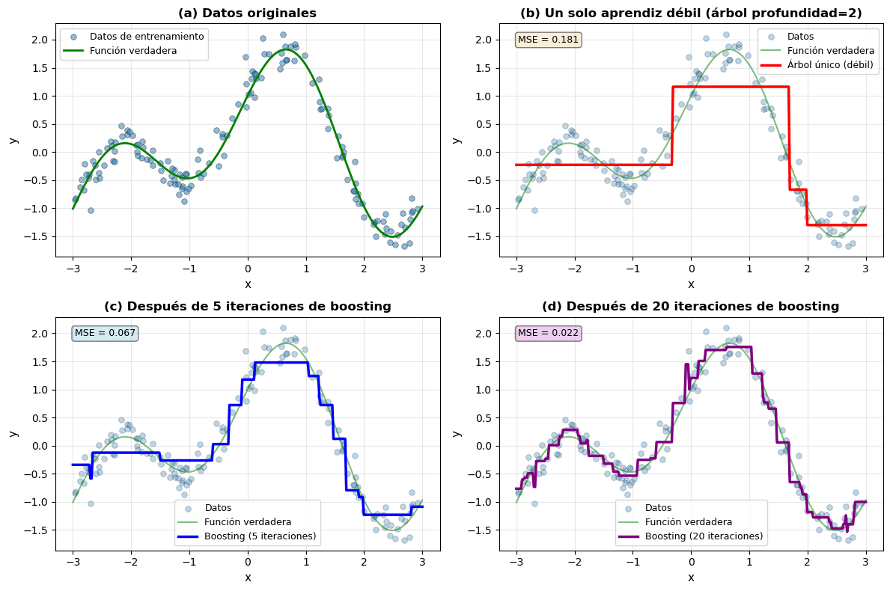

import numpy as np
import matplotlib.pyplot as plt
from sklearn.ensemble import GradientBoostingRegressor
from sklearn.tree import DecisionTreeRegressor
# Configurar el estilo de las gráficas
plt.style.use('default')
np.random.seed(42)
# Generar datos sintéticos 1D
def true_function(x):
"""Función verdadera: combinación de seno y tendencia lineal"""
return np.sin(2 * x) + 0.1 * x + np.cos(x)
# Generar datos
n_samples = 150
X_train = np.random.uniform(-3, 3, n_samples)
y_train = true_function(X_train) + np.random.normal(0, 0.2, n_samples)
# Puntos para visualización
X_plot = np.linspace(-3, 3, 300).reshape(-1, 1)
y_true = true_function(X_plot.ravel())
# Entrenar modelos con diferente número de iteraciones
single_tree = DecisionTreeRegressor(max_depth=2, random_state=42)
single_tree.fit(X_train.reshape(-1, 1), y_train)
boosting_5 = GradientBoostingRegressor(
n_estimators=5,
max_depth=2,
learning_rate=0.5,
random_state=42
)
boosting_5.fit(X_train.reshape(-1, 1), y_train)
boosting_20 = GradientBoostingRegressor(
n_estimators=20,
max_depth=2,
learning_rate=0.5,
random_state=42
)
boosting_20.fit(X_train.reshape(-1, 1), y_train)
# Predicciones
y_single = single_tree.predict(X_plot)
y_boost_5 = boosting_5.predict(X_plot)
y_boost_20 = boosting_20.predict(X_plot)
# Crear figura con 4 subgráficas
fig, axes = plt.subplots(2, 2, figsize=(12, 8))
# (a) Datos originales
ax = axes[0, 0]
ax.scatter(X_train, y_train, alpha=0.5, s=30, edgecolors='k', linewidths=0.5, label='Datos de entrenamiento')
ax.plot(X_plot, y_true, 'g-', linewidth=2, label='Función verdadera')
ax.set_xlabel('x', fontsize=11)
ax.set_ylabel('y', fontsize=11)
ax.set_title('(a) Datos originales', fontsize=12, fontweight='bold')
ax.legend(fontsize=9)
ax.grid(True, alpha=0.3)
# (b) Árbol único (aprendiz débil)
ax = axes[0, 1]
ax.scatter(X_train, y_train, alpha=0.3, s=30, edgecolors='k', linewidths=0.5, label='Datos')
ax.plot(X_plot, y_true, 'g-', linewidth=1.5, alpha=0.5, label='Función verdadera')
ax.plot(X_plot, y_single, 'r-', linewidth=2.5, label='Árbol único (débil)')
ax.set_xlabel('x', fontsize=11)
ax.set_ylabel('y', fontsize=11)
ax.set_title('(b) Un solo aprendiz débil (árbol profundidad=2)', fontsize=12, fontweight='bold')
ax.legend(fontsize=9)
ax.grid(True, alpha=0.3)
# Calcular y mostrar MSE
mse_single = np.mean((y_train - single_tree.predict(X_train.reshape(-1, 1)))**2)
ax.text(0.05, 0.95, f'MSE = {mse_single:.3f}', transform=ax.transAxes,
verticalalignment='top', bbox=dict(boxstyle='round', facecolor='wheat', alpha=0.5),
fontsize=9)
# (c) Boosting con 5 iteraciones
ax = axes[1, 0]
ax.scatter(X_train, y_train, alpha=0.3, s=30, edgecolors='k', linewidths=0.5, label='Datos')
ax.plot(X_plot, y_true, 'g-', linewidth=1.5, alpha=0.5, label='Función verdadera')
ax.plot(X_plot, y_boost_5, 'b-', linewidth=2.5, label='Boosting (5 iteraciones)')
ax.set_xlabel('x', fontsize=11)
ax.set_ylabel('y', fontsize=11)
ax.set_title('(c) Después de 5 iteraciones de boosting', fontsize=12, fontweight='bold')
ax.legend(fontsize=9)
ax.grid(True, alpha=0.3)
# Calcular y mostrar MSE
mse_boost5 = np.mean((y_train - boosting_5.predict(X_train.reshape(-1, 1)))**2)
ax.text(0.05, 0.95, f'MSE = {mse_boost5:.3f}', transform=ax.transAxes,
verticalalignment='top', bbox=dict(boxstyle='round', facecolor='lightblue', alpha=0.5),
fontsize=9)
# (d) Boosting con 20 iteraciones
ax = axes[1, 1]
ax.scatter(X_train, y_train, alpha=0.3, s=30, edgecolors='k', linewidths=0.5, label='Datos')
ax.plot(X_plot, y_true, 'g-', linewidth=1.5, alpha=0.5, label='Función verdadera')
ax.plot(X_plot, y_boost_20, 'purple', linewidth=2.5, label='Boosting (20 iteraciones)')
ax.set_xlabel('x', fontsize=11)
ax.set_ylabel('y', fontsize=11)
ax.set_title('(d) Después de 20 iteraciones de boosting', fontsize=12, fontweight='bold')
ax.legend(fontsize=9)
ax.grid(True, alpha=0.3)
# Calcular y mostrar MSE
mse_boost20 = np.mean((y_train - boosting_20.predict(X_train.reshape(-1, 1)))**2)
ax.text(0.05, 0.95, f'MSE = {mse_boost20:.3f}', transform=ax.transAxes,
verticalalignment='top', bbox=dict(boxstyle='round', facecolor='plum', alpha=0.5),
fontsize=9)
plt.tight_layout()
plt.show()
